Offenbach 1864, opera-buffa parigina dal mito di Elena di Troia. Châtelet 2015, costumi premiati Golden Prague: l'ironia francese del Secondo Impero ridotta a guardaroba scintillante.
Offenbach 1864, Parisian opera-bouffe from the myth of Helen of Troy. Châtelet 2015, Golden Prague-awarded costumes: Second Empire French irony reduced to a sparkling wardrobe.
Offenbach 1864, opéra-bouffe parisien du mythe d'Hélène de Troie. Châtelet 2015, costumes primés Golden Prague.
Per il Théâtre du Châtelet di Parigi, dal 2 al 22 giugno 2015, Cristian Taraborrelli firma i costumi di una Belle Hélène che diventa subito un caso: circa 80 costumi originali per il capolavoro buffo di Jacques Offenbach (1864). La regia, le scene e i video sono di Giorgio Barberio Corsetti e Pierrick Sorin (sistema chroma key con triplice schermo sovrastante il palcoscenico), sotto la bacchetta del giovane fenomeno Lorenzo Viotti alla testa dell'Orchestre Prométhée. Sul palcoscenico, Gaëlle Arquez è Hélène, Merto Sungu è Pâris, Gilles Ragon e Jean-Philippe Lafont completano un cast di voci francesi e internazionali.
L'idea registica e visiva è chiara: la Grecia antica di Offenbach non si racconta filologicamente, si rilegge attraverso un filtro cinematografico potente, il peplum italiano di Cinecittà degli anni '50 e '60. Hercules, Maciste, Ulisse, le grandi produzioni in Cinemascope di Pietro Francisci, Mario Bava, Vittorio Cottafavi: il museo immaginario della classicità pop. Sui costumi disegnati da Taraborrelli e tradotti in tavola dalla figurinista Angela Buscemi, la mitologia diventa Cinecittà in technicolor, ironica, sensuale, debordante.
Il dialogo con le video-installazioni di Pierrick Sorin, maestro francese del théâtre optique, completa il dispositivo: gli interpreti dialogano con i propri doppi virtuali, la scena diventa un set cinematografico vivo. La produzione si aggiudica la Special Mention al Golden Prague International Television Festival 2015, con una citazione che parla di «pure eye candy» e di un «omaggio generoso ai misteri e alle stravaganze del teatro musicale».
For the Théâtre du Châtelet in Paris, from 2 to 22 June 2015, Cristian Taraborrelli designed the costumes of a Belle Hélène that immediately became a talking-point: approximately 80 original costumes for Offenbach's 1864 opéra bouffe. Direction, sets and video are by Giorgio Barberio Corsetti and Pierrick Sorin (chroma key system with triple screen overhanging the stage), under the baton of the young phenomenon Lorenzo Viotti at the helm of the Orchestre Prométhée. On stage, Gaëlle Arquez as Hélène, Merto Sungu as Pâris, Gilles Ragon and Jean-Philippe Lafont completed a cast of French and international voices.
The directorial and visual idea was clear: Offenbach's ancient Greece is not told philologically, but reread through a powerful cinematic filter, Italian peplum from Cinecittà in the 1950s and '60s. Hercules, Maciste, Ulysses, the great Cinemascope productions of Pietro Francisci, Mario Bava, Vittorio Cottafavi: the imaginary museum of pop classicism. On the costumes designed by Taraborrelli and translated into plates by costume sketch artist Angela Buscemi, mythology becomes Cinecittà in technicolor, ironic, sensual, exuberant.
The dialogue with the video installations of Pierrick Sorin, French master of théâtre optique, completed the device: singers dialogue with their virtual doubles, the stage becomes a living film set. The production won the Special Mention at the Golden Prague International Television Festival 2015, with a citation speaking of «pure eye candy» and a «generous homage to the mysteries and extravagances of music theatre».
Pour le Théâtre du Châtelet de Paris, du 2 au 22 juin 2015, Cristian Taraborrelli signe les costumes d'une Belle Hélène qui devient immédiatement un événement : environ 80 costumes originaux pour le chef-d'œuvre bouffe de Jacques Offenbach (1864). La mise en scène, les décors et la vidéo sont de Giorgio Barberio Corsetti et Pierrick Sorin (système chroma key avec triple écran surplombant le plateau), sous la baguette du jeune phénomène Lorenzo Viotti à la tête de l'Orchestre Prométhée. Sur le plateau, Gaëlle Arquez en Hélène, Merto Sungu en Pâris, Gilles Ragon et Jean-Philippe Lafont complètent une distribution de voix françaises et internationales.
L'idée scénique et visuelle est limpide : la Grèce antique d'Offenbach ne se raconte pas de façon philologique, elle se relit à travers un filtre cinématographique puissant, le péplum italien de Cinecittà des années 1950-60. Hercules, Maciste, Ulysse, les grandes productions en Cinemascope de Pietro Francisci, Mario Bava, Vittorio Cottafavi : le musée imaginaire du classicisme pop. Sur les costumes dessinés par Taraborrelli et traduits en planches par la figuriniste Angela Buscemi, la mythologie devient Cinecittà en technicolor, ironique, sensuelle, débordante.
Le dialogue avec les installations vidéo de Pierrick Sorin, maître français du théâtre optique, achève le dispositif : les interprètes dialoguent avec leurs doubles virtuels, la scène devient un plateau de cinéma vivant. La production remporte la Mention Spéciale du Golden Prague International Television Festival 2015, avec une citation qui parle de «pure eye candy» et d'un «hommage généreux aux mystères et extravagances du théâtre musical».
L'Opera — Offenbach e Helena di Troia
La Belle Hélène è un'opéra bouffe in tre atti di Jacques Offenbach su libretto di Henri Meilhac e Ludovic Halévy, andata in scena per la prima volta al Théâtre des Variétés di Parigi il 17 dicembre 1864. Protagonista assoluta della prima fu Hortense Schneider, la grande primadonna che divenne il simbolo del Secondo Impero e che Napoleone III battezzò ironicamente «la passage des princes»: dopo Belle Hélène diventerà protagonista anche di La Vie parisienne, La Grande-Duchesse de Gérolstein, La Périchole.
L'opera mette in scena il celebre mito troiano del giudizio di Paride e del rapimento di Elena di Sparta, ma lo fa con il filtro deformante della satira. Dietro re imbecilli, indovini venali, regine annoiate ed eroi di cartapesta, Offenbach colpisce la borghesia del Secondo Impero, la corte di Napoleone III, l'ipocrisia bigotta dei moralismi ufficiali. La musica è brillante, sensuale, irresistibile: il celebre «Au mont Ida», la marcia dei re, l'invocazione a Vénus restano tra i numeri più popolari del repertorio.
L'opéra bouffe inventata da Offenbach — con i fratelli Crespin e Castil-Blaze come predecessori, ma con una vena satirica e teatrale assolutamente nuova — è il modello di tutta l'operetta francese e, di rimando, della commedia musicale americana del Novecento. La Belle Hélène è uno dei pilastri di quella linea: un'opera che ride dei propri eroi mentre commuove con la propria malinconia.
La Belle Hélène is an opéra bouffe in three acts by Jacques Offenbach to a libretto by Henri Meilhac and Ludovic Halévy, premiered at the Théâtre des Variétés in Paris on 17 December 1864. The protagonist of the premiere was Hortense Schneider, the great prima donna who became the symbol of the Second Empire and whom Napoleon III ironically nicknamed «la passage des princes»: after Belle Hélène she would also star in La Vie parisienne, La Grande-Duchesse de Gérolstein, La Périchole.
The opera stages the famous Trojan myth of the judgement of Paris and the abduction of Helen of Sparta, but does so through the deforming filter of satire. Behind imbecilic kings, venal soothsayers, bored queens and papier-mâché heroes, Offenbach strikes at the Second Empire bourgeoisie, Napoleon III's court, the bigoted hypocrisy of official moralisms. The music is brilliant, sensual, irresistible: the famous «Au mont Ida», the kings' march, the invocation to Vénus remain among the most popular numbers in the repertoire.
The opéra bouffe invented by Offenbach — with the Crespin brothers and Castil-Blaze as predecessors, but with an absolutely new satirical and theatrical vein — is the model for the entire French operetta tradition and, by extension, for the twentieth-century American musical. La Belle Hélène is one of the pillars of that line: an opera that laughs at its own heroes while moving us with its melancholy.
La Belle Hélène est un opéra bouffe en trois actes de Jacques Offenbach sur un livret de Henri Meilhac et Ludovic Halévy, créé au Théâtre des Variétés de Paris le 17 décembre 1864. La protagoniste de la création fut Hortense Schneider, grande primadonna devenue le symbole du Second Empire et que Napoléon III surnomma ironiquement «le passage des princes» : après Belle Hélène, elle sera aussi la créatrice de La Vie parisienne, de La Grande-Duchesse de Gérolstein, de La Périchole.
L'œuvre met en scène le célèbre mythe troyen du jugement de Pâris et de l'enlèvement d'Hélène de Sparte, mais à travers le filtre déformant de la satire. Derrière des rois imbéciles, des devins vénaux, des reines ennuyées et des héros en carton-pâte, Offenbach frappe la bourgeoisie du Second Empire, la cour de Napoléon III, l'hypocrisie bigote des moralismes officiels. La musique est brillante, sensuelle, irrésistible : le célèbre «Au mont Ida», la marche des rois, l'invocation à Vénus comptent parmi les numéros les plus populaires du répertoire.
L'opéra bouffe inventé par Offenbach — avec les frères Crespin et Castil-Blaze comme prédécesseurs, mais avec une veine satirique et théâtrale absolument neuve — est le modèle de toute l'opérette française et, par ricochet, de la comédie musicale américaine du XXe siècle. La Belle Hélène est l'un des piliers de cette ligne : un opéra qui rit de ses propres héros tout en nous émouvant par sa mélancolie.
La Visione — Cinecittà come filtro culturale
Perché Cinecittà? La risposta sta nella natura stessa della Belle Hélène. Offenbach non racconta la mitologia, la fa rimbalzare in uno specchio comico: i suoi greci sono parigini del 1864 in costume da bagno classicheggiante. Allo stesso modo, il peplum italiano degli anni '50 e '60 — Le fatiche di Ercole (1958) di Pietro Francisci con Steve Reeves, Ercole e la regina di Lidia, Ulisse di Mario Camerini con Kirk Douglas, le saghe di Maciste, La battaglia di Maratona di Jacques Tourneur, fino al Cleopatra di Mankiewicz girato in parte a Cinecittà nel 1963 — rilegge i miti antichi in chiave pop, populare, sensuale, fra muscoli oliati, sandali da gladiatore, principesse in chitone trasparente e divinità in technicolor.
La scelta di Taraborrelli è un atto di traduzione culturale: come Offenbach traduceva Omero in vaudeville parigino, lui traduce Omero in Cinecittà. I costumi giocano sulla doppia firma del riferimento: tuniche, sandali, pettorali e diademi della Grecia antica, ma in tessuti, stampe e cromie da set cinematografico anni Cinquanta — lamé, satin, fucsia, oro pirrico, blu cobalto. Il guerriero con la lancia è un Maciste; la regina è Sophia Loren in Elena di Troia; gli dei sembrano usciti da un fotoromanzo. La cultura italiana del peplum, tanto amata in Francia (basti pensare al culto di Maciste a Parigi), diventa la lingua condivisa fra il pubblico del Châtelet e l'ironia di Offenbach.
Sul palcoscenico, le video-installazioni di Pierrick Sorin aggiungono un secondo livello: gli interpreti dialogano con doppi virtuali, paesaggi greci proiettati come cartoline, citazioni cinematografiche che entrano ed escono dalla scena come in un montaggio. Il risultato è un'opera che respira come un set, ride come un musical, brilla come un Cinemascope: una macchina della meraviglia che ha il rigore di Offenbach e la generosità del cinema italiano.
Why Cinecittà? The answer lies in the very nature of La Belle Hélène. Offenbach does not recount mythology, he bounces it back in a comic mirror: his Greeks are 1864 Parisians in vaguely classical bathing costume. In the same way, Italian peplum cinema of the 1950s and '60s — Pietro Francisci's Hercules (1958) with Steve Reeves, Hercules and the Queen of Lydia, Mario Camerini's Ulysses with Kirk Douglas, the Maciste sagas, Jacques Tourneur's The Giant of Marathon, all the way to Mankiewicz's Cleopatra partly shot at Cinecittà in 1963 — reread ancient myths in a pop, popular, sensual key, between oiled muscles, gladiator sandals, princesses in transparent chiton and gods in technicolor.
Taraborrelli's choice is an act of cultural translation: just as Offenbach translated Homer into Parisian vaudeville, he translates Homer into Cinecittà. The costumes play on a double signature of reference: tunics, sandals, breastplates and diadems of ancient Greece, but in fabrics, prints and palettes drawn from a 1950s film set — lamé, satin, fuchsia, pyrrhic gold, cobalt blue. The warrior with his spear is a Maciste; the queen is Sophia Loren in Helen of Troy; the gods seem to come straight out of a photo-novel. The Italian peplum culture, so beloved in France (just think of the Parisian cult of Maciste), becomes the shared language between the Châtelet audience and Offenbach's irony.
On stage, the video installations of Pierrick Sorin add a second layer: the singers dialogue with virtual doubles, Greek landscapes are projected like postcards, cinematic quotations enter and exit the scene as in a film edit. The result is an opera that breathes like a set, laughs like a musical, shines like a Cinemascope: a wonder-machine with the rigour of Offenbach and the generosity of Italian cinema.
Pourquoi Cinecittà ? La réponse tient dans la nature même de La Belle Hélène. Offenbach ne raconte pas la mythologie, il la fait rebondir dans un miroir comique : ses Grecs sont des Parisiens de 1864 en costume de bain vaguement classique. De la même façon, le péplum italien des années 1950-60 — Les Travaux d'Hercule (1958) de Pietro Francisci avec Steve Reeves, Hercule et la reine de Lydie, Ulysse de Mario Camerini avec Kirk Douglas, les sagas de Maciste, La Bataille de Marathon de Jacques Tourneur, jusqu'au Cléopâtre de Mankiewicz tourné en partie à Cinecittà en 1963 — relit les mythes antiques en clé pop, populaire, sensuelle, entre muscles huilés, sandales de gladiateur, princesses en chiton transparent et divinités en technicolor.
Le choix de Taraborrelli est un acte de traduction culturelle : comme Offenbach traduisait Homère en vaudeville parisien, il traduit Homère en Cinecittà. Les costumes jouent sur la double signature de la référence : tuniques, sandales, plastrons et diadèmes de la Grèce antique, mais en tissus, imprimés et palettes de plateau de cinéma des années 1950 — lamé, satin, fuchsia, or pyrrhique, bleu cobalt. Le guerrier à la lance est un Maciste ; la reine est Sophia Loren dans Helène de Troie ; les dieux semblent sortir d'un roman-photo. La culture italienne du péplum, tant aimée en France (il suffit de penser au culte de Maciste à Paris), devient la langue commune entre le public du Châtelet et l'ironie d'Offenbach.
Sur le plateau, les installations vidéo de Pierrick Sorin ajoutent une seconde strate : les chanteurs dialoguent avec des doubles virtuels, les paysages grecs sont projetés comme des cartes postales, des citations cinématographiques entrent et sortent de la scène comme dans un montage. Résultat : un opéra qui respire comme un plateau, rit comme un musical, brille comme un Cinemascope : une machine à merveilles avec la rigueur d'Offenbach et la générosité du cinéma italien.
Premio — Golden Prague 2015
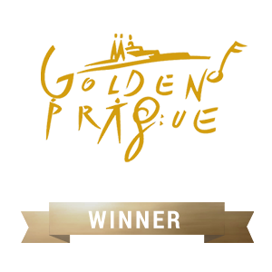
Il Golden Prague International Television Festival è uno dei più antichi e prestigiosi premi al mondo dedicati alla produzione televisiva di musica e teatro: nato a Praga nel 1964, premia ogni anno le migliori riprese di opera, balletto e concerti. La Special Mention 2015 attribuita alla Belle Hélène del Châtelet riconosce la qualità visiva, scenica e drammaturgica della produzione, distribuita in TV in Europa e diventata video-riferimento dell'opera.
The Golden Prague International Television Festival is one of the oldest and most prestigious awards in the world dedicated to the television production of music and theatre: founded in Prague in 1964, it celebrates every year the best filmed productions of opera, ballet and concerts. The Special Mention 2015 awarded to the Châtelet's Belle Hélène acknowledges the visual, theatrical and dramaturgical quality of the production, broadcast across Europe and now a video reference for the opera.
Le Golden Prague International Television Festival est l'un des plus anciens et prestigieux prix au monde dédiés à la production télévisuelle de musique et de théâtre : fondé à Prague en 1964, il récompense chaque année les meilleures captations d'opéra, ballet et concerts. La Mention Spéciale 2015 décernée à la Belle Hélène du Châtelet salue la qualité visuelle, scénique et dramaturgique de la production, diffusée à la télévision en Europe et devenue référence vidéo de l'œuvre.
« Humouristic, artful and with a feeling of limitless possibilities, this catchy television production uses all sorts of technical fun to accentuate the ingenious stage directing. It's pure eye candy and a generous homage to the mysteries and extravagances of music theater. La Belle Hélène is a great gift to all television, stage and music lovers. »
— Golden Prague International Television Festival, Special Mention Award · 2015
Curiosità Storiche
Parigi, 17 dicembre 1864. La prima della Belle Hélène ebbe luogo al Théâtre des Variétés. La satira contro Napoleone III e la corte imperiale era così trasparente che molti spettatori delle prime serate si guardavano l'un l'altro per capire chi avrebbe riso per primo. Funzionò: l'opera divenne uno dei trionfi assoluti del Secondo Impero, replicata in tutta Europa nel giro di pochi mesi.
Hortense Schneider, la primadonna del Secondo Impero. La creatrice di Hélène fu Hortense Schneider, la diva preferita di Offenbach. Era così corteggiata dai principi europei in visita all'Esposizione Universale del 1867 che Napoleone III, divertito, le diede il soprannome di «la passage des princes». Nessun ruolo offenbachiano nasce senza pensare a lei.
Peplum italiano: il cinema dei muscoli e dei miti. Tra il 1958 e il 1965 Cinecittà produce oltre 200 film «peplum»: Hercules con Steve Reeves (1958) inaugura il filone, seguono Maciste, Ercole, Ursus, Sansone, fino al colossal Cleopatra di Mankiewicz girato in parte a Cinecittà. Sono film di consumo, ma con scenografi e costumisti di altissimo livello (Veniero Colasanti, John Moore, Vittorio Nino Novarese): la fonte iconografica della Belle Hélène 2015.
Pierrick Sorin e il théâtre optique. Nato a Nantes nel 1960, Pierrick Sorin è uno dei più originali video-artisti francesi, autore di installazioni che giocano sull'illusione ottica e sull'immagine virtuale. La sua collaborazione con Corsetti e Taraborrelli arriva da Pietra del Paragone (Théâtre du Châtelet 2007, premio Olivier 2010) e prosegue con Belle Hélène nel 2015: la sua firma porta in scena doppi virtuali, paesaggi proiettati e illusioni cinematografiche.
Il Châtelet, tempio dell'operetta. Inaugurato nel 1862 con i suoi oltre 2.500 posti, il Théâtre du Châtelet è storicamente il tempio parigino dell'opera spettacolare e dell'operetta. Negli anni 2000-2010, sotto la direzione di Jean-Luc Choplin, ha ospitato produzioni che hanno fatto epoca: dai musical americani importati (West Side Story, Sweeney Todd) alle riletture sceniche di Offenbach. La Belle Hélène del 2015 si inserisce in questa stagione storica del teatro.
Paris, 17 December 1864. The premiere of La Belle Hélène took place at the Théâtre des Variétés. The satire of Napoleon III and the imperial court was so transparent that many spectators on opening nights kept glancing at each other to see who would dare laugh first. It worked: the opera became one of the absolute triumphs of the Second Empire, restaged across Europe within months.
Hortense Schneider, prima donna of the Second Empire. The creator of Hélène was Hortense Schneider, Offenbach's favourite diva. She was so courted by European princes during the 1867 Universal Exposition that Napoleon III, amused, nicknamed her «la passage des princes». No Offenbach role was conceived without thinking of her.
Italian peplum: the cinema of muscles and myths. Between 1958 and 1965 Cinecittà produced over 200 «peplum» films: Hercules with Steve Reeves (1958) launched the genre, followed by Maciste, Ercole, Ursus, Samson, up to Mankiewicz's blockbuster Cleopatra partly shot at Cinecittà. Genre cinema, but with set and costume designers of the highest calibre (Veniero Colasanti, John Moore, Vittorio Nino Novarese): the iconographic source of the 2015 Belle Hélène.
Pierrick Sorin and théâtre optique. Born in Nantes in 1960, Pierrick Sorin is one of the most original French video artists, author of installations that play with optical illusion and virtual imagery. His collaboration with Corsetti and Taraborrelli began with La Pietra del Paragone (Théâtre du Châtelet 2007, Olivier Award 2010) and continued with Belle Hélène in 2015: his signature brings to the stage virtual doubles, projected landscapes and cinematic illusions.
The Châtelet, temple of operetta. Inaugurated in 1862 with over 2,500 seats, the Théâtre du Châtelet is historically the Parisian temple of spectacular opera and operetta. In the 2000s and 2010s, under the direction of Jean-Luc Choplin, it hosted productions that defined an era: from imported American musicals (West Side Story, Sweeney Todd) to scenic rereadings of Offenbach. The 2015 Belle Hélène belongs to that historic season of the theatre.
Paris, 17 décembre 1864. La création de La Belle Hélène eut lieu au Théâtre des Variétés. La satire de Napoléon III et de la cour impériale était si transparente que de nombreux spectateurs des premières représentations s'observaient les uns les autres pour savoir qui oserait rire le premier. Cela fonctionna : l'opéra devint l'un des triomphes absolus du Second Empire, repris dans toute l'Europe en quelques mois.
Hortense Schneider, primadonna du Second Empire. La créatrice d'Hélène fut Hortense Schneider, la diva favorite d'Offenbach. Elle était si courtisée par les princes européens lors de l'Exposition universelle de 1867 que Napoléon III, amusé, la surnomma «le passage des princes». Aucun rôle offenbachien ne naît sans elle à l'esprit.
Péplum italien : le cinéma des muscles et des mythes. Entre 1958 et 1965, Cinecittà produit plus de 200 films «péplum» : Hercules avec Steve Reeves (1958) inaugure le filon, suivent Maciste, Ercole, Ursus, Samson, jusqu'au colossal Cléopâtre de Mankiewicz tourné en partie à Cinecittà. Cinéma de genre, mais avec des décorateurs et costumiers de très haut niveau (Veniero Colasanti, John Moore, Vittorio Nino Novarese) : la source iconographique de la Belle Hélène 2015.
Pierrick Sorin et le théâtre optique. Né à Nantes en 1960, Pierrick Sorin est l'un des plus originaux vidéastes français, auteur d'installations qui jouent sur l'illusion optique et l'image virtuelle. Sa collaboration avec Corsetti et Taraborrelli commence avec La Pietra del Paragone (Théâtre du Châtelet 2007, Olivier Award 2010) et se poursuit avec Belle Hélène en 2015 : sa signature porte en scène des doubles virtuels, des paysages projetés, des illusions cinématographiques.
Le Châtelet, temple de l'opérette. Inauguré en 1862 avec ses plus de 2 500 places, le Théâtre du Châtelet est historiquement le temple parisien de l'opéra spectaculaire et de l'opérette. Dans les années 2000-2010, sous la direction de Jean-Luc Choplin, il a accueilli des productions qui ont fait date : des comédies musicales américaines importées (West Side Story, Sweeney Todd) aux relectures scéniques d'Offenbach. La Belle Hélène de 2015 s'inscrit dans cette saison historique du théâtre.
Galleria — Foto di scena

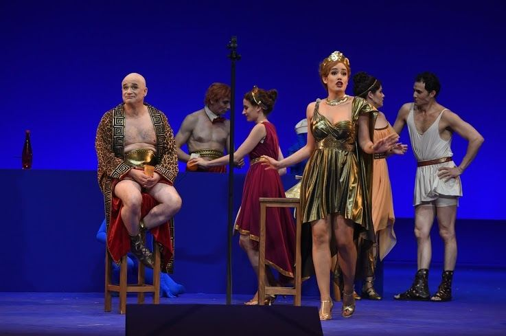
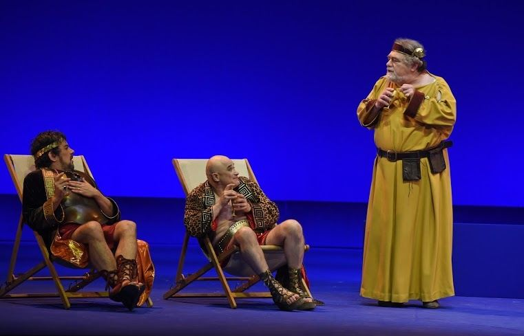
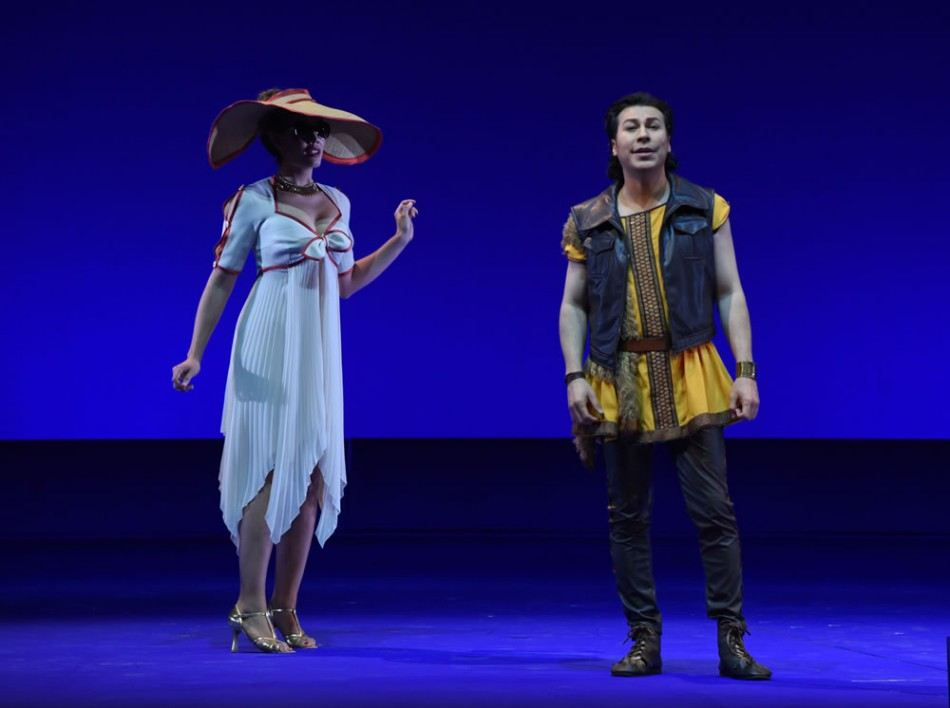
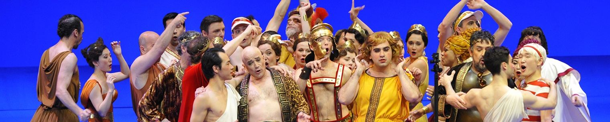
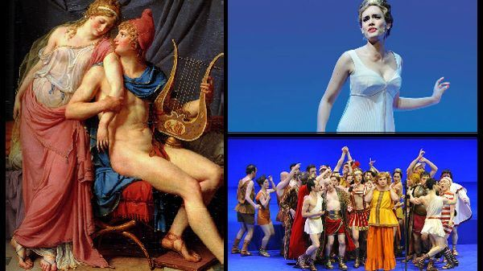
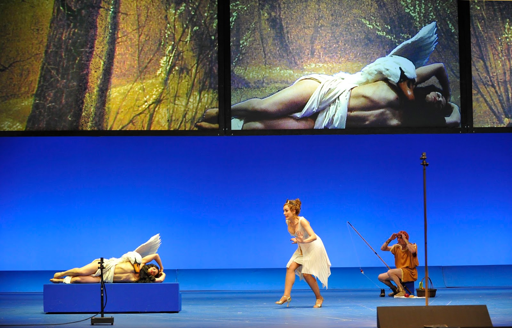
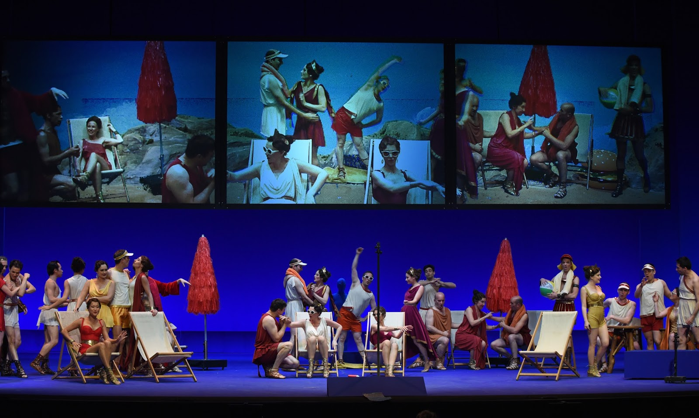
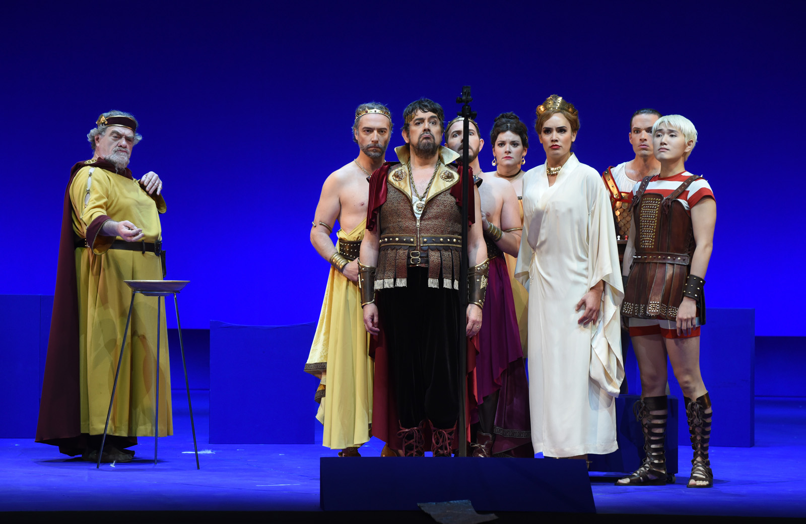
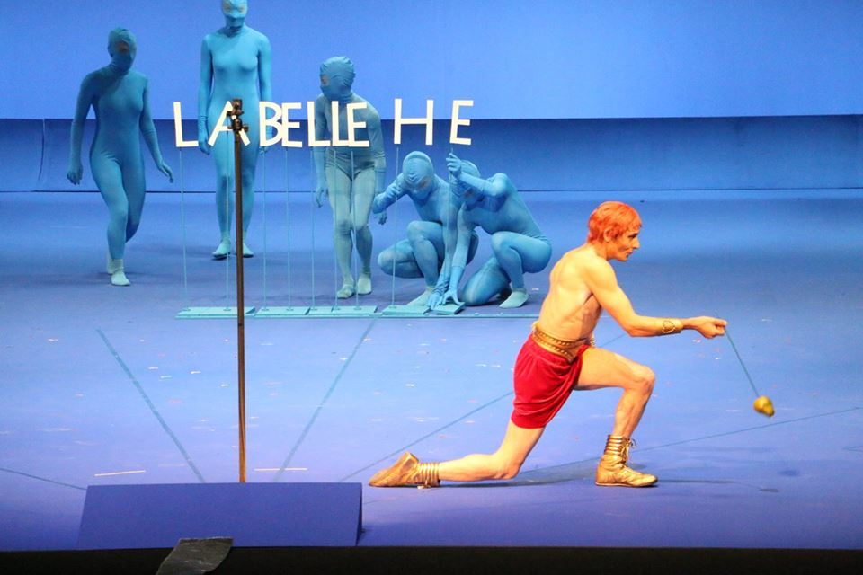
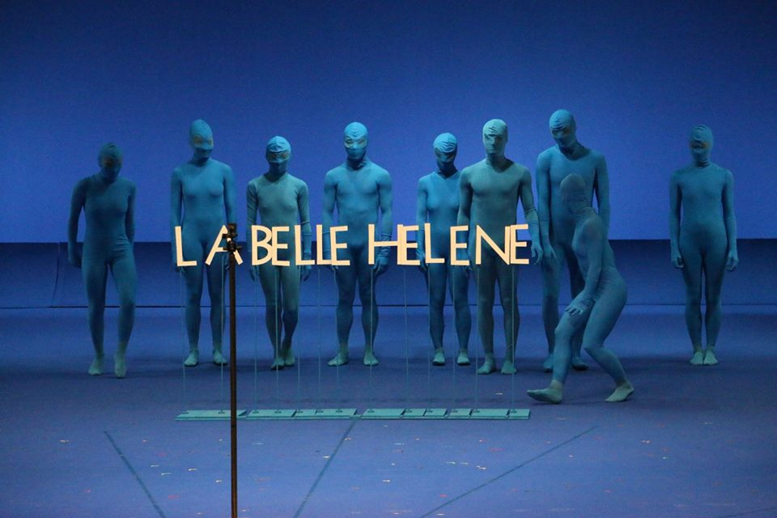
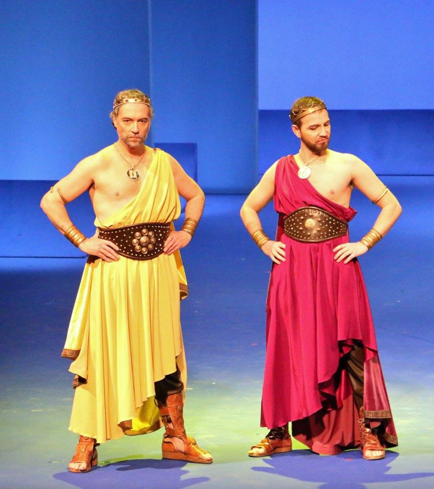
Photo credits: © Théâtre du Châtelet — Marie-Noëlle Robert
Figurini — Angela Buscemi
I figurini originali di Angela Buscemi traducono in segno e colore la visione dei costumi: un equilibrio tra il riferimento classico della Grecia antica e la sensibilità pop del cinema peplum di Cinecittà. Ogni tavola è un progetto preciso di forme, tessuti e accessori — dalla pettinatura allo spillone, dal sandalo al diadema.
Angela Buscemi's original sketches translate the costume vision into line and colour: a balance between classical Greek references and the pop sensibility of Cinecittà's peplum cinema. Each plate is a precise design of shapes, fabrics and accessories — from hairstyle to hairpin, from sandal to diadem.
Les figurines originales d'Angela Buscemi traduisent en trait et couleur la vision des costumes : un équilibre entre la référence classique de la Grèce antique et la sensibilité pop du cinéma péplum de Cinecittà. Chaque planche est un projet précis de formes, tissus et accessoires — de la coiffure à l'épingle, de la sandale au diadème.
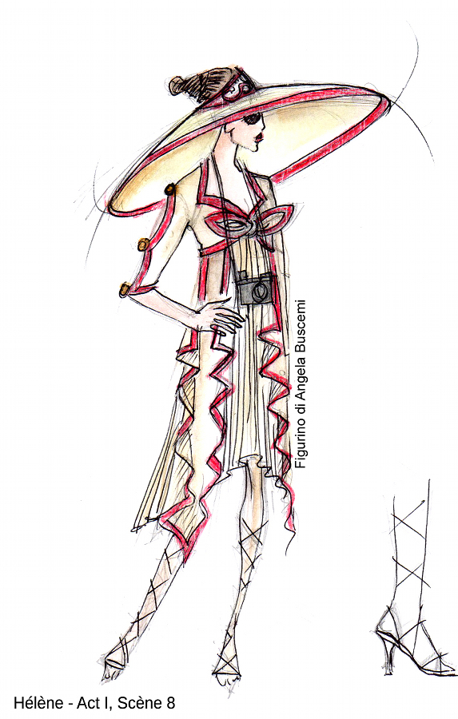
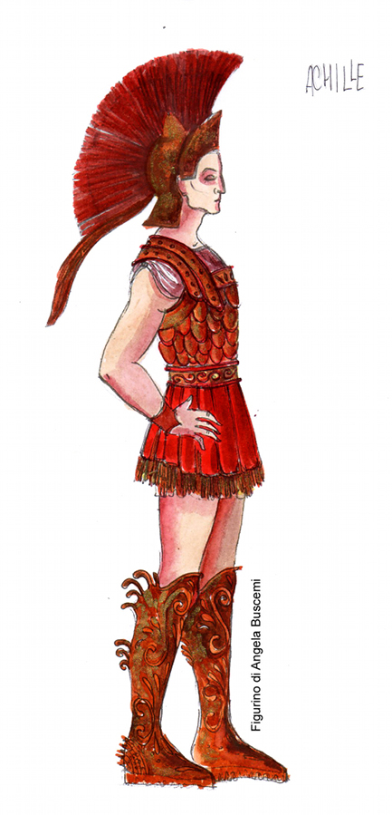
Figurini di Angela Buscemi
I Collaboratori
Co-Regia
Giorgio Barberio Corsetti
Attore, drammaturgo e regista, fondatore della compagnia La Gaia Scienza nel 1976 e di Fattore K. nel 2001. Direttore della Sezione Teatro della Biennale di Venezia dal 1999, dal 2019 al 2023 al Teatro di Roma. Lavora sul confine tra teatro, video, danza e arti visive. Le sue regie d'opera includono La Pietra del Paragone (Châtelet 2007, Olivier 2010), Turandot (La Scala 2011), Macbeth (La Scala 2013), Pagliacci (La Scala 2018). La sua collaborazione con Cristian Taraborrelli attraversa più di un decennio di produzioni rossiniane, mozartiane, verdiane, pucciniane e offenbachiane.
Co-Regia & Video
Pierrick Sorin
Video-artista francese nato a Nantes nel 1960, considerato uno dei più originali autori di installazioni ottiche e teatri ottici contemporanei. Le sue opere — in cui spesso compare lui stesso come performer multiplicato — sono esposte al Centre Pompidou, alla Fondation Cartier, al MAMAC di Nizza. Per il teatro ha firmato con Corsetti La Pietra del Paragone (Châtelet 2007, premio Olivier 2010) e Belle Hélène (2015): la sua firma trasforma la scena in un dispositivo cinematografico vivo, dove i cantanti dialogano con i propri doppi virtuali.
Direttore d'orchestra
Lorenzo Viotti
Direttore italo-svizzero nato a Losanna nel 1990, figlio del leggendario Marcello Viotti. Vincitore del Concorso Cadaqués 2013 e del Salzburg Young Conductors Award 2015, è oggi tra le bacchette più richieste della sua generazione: dal 2021 direttore musicale dell'Olandese Dutch National Opera e della Netherlands Philharmonic Orchestra. La sua Belle Hélène al Châtelet, a soli 25 anni, è uno degli appuntamenti che lanciano definitivamente la sua carriera internazionale.
Figurini
Angela Buscemi
Costumista e illustratrice, collaboratrice storica dello studio Taraborrelli per il disegno dei figurini. La sua mano traduce le indicazioni cromatiche e materiche del costume designer in tavole pittoriche che diventano poi la guida operativa delle sartorie. Per la Belle Hélène lavora alla doppia anima dei costumi — classico greco e peplum di Cinecittà — che è la chiave di lettura della produzione, dialogando direttamente con le sartorie del Châtelet.
Co-Direction
Giorgio Barberio Corsetti
Actor, playwright and director, founder of La Gaia Scienza in 1976 and Fattore K. in 2001. Director of the Theatre Section of the Venice Biennale from 1999, and of the Teatro di Roma from 2019 to 2023. He works at the frontier of theatre, video, dance and visual arts. His opera credits include La Pietra del Paragone (Châtelet 2007, Olivier 2010), Turandot (La Scala 2011), Macbeth (La Scala 2013), Pagliacci (La Scala 2018). His collaboration with Cristian Taraborrelli spans over a decade of Rossini, Mozart, Verdi, Puccini and Offenbach productions.
Co-Direction & Video
Pierrick Sorin
French video artist born in Nantes in 1960, considered one of the most original authors of contemporary optical installations and théâtres optiques. His works — in which he often appears as a multiplied performer — are shown at the Centre Pompidou, the Fondation Cartier, the MAMAC of Nice. For theatre he has signed with Corsetti La Pietra del Paragone (Châtelet 2007, Olivier Award 2010) and Belle Hélène (2015): his signature turns the stage into a living cinematic device, where singers dialogue with their virtual doubles.
Conductor
Lorenzo Viotti
Italian-Swiss conductor born in Lausanne in 1990, son of the legendary Marcello Viotti. Winner of the Cadaqués Competition in 2013 and of the Salzburg Young Conductors Award in 2015, he is now among the most sought-after batons of his generation: since 2021 music director of the Dutch National Opera and the Netherlands Philharmonic Orchestra. His Belle Hélène at the Châtelet, at only 25, is one of the appointments that definitively launches his international career.
Costume Sketches
Angela Buscemi
Costume designer and illustrator, longstanding collaborator of Taraborrelli's studio for figurino and costume drawing. Her hand translates the costume designer's chromatic and material directions into pictorial sketches that then guide the workshops. For Belle Hélène she works on the double soul of the costumes — Greek classical and Cinecittà peplum — the key to reading the production, in direct dialogue with the Châtelet's tailoring ateliers.
Co-Mise en scène
Giorgio Barberio Corsetti
Acteur, dramaturge et metteur en scène, fondateur de La Gaia Scienza en 1976 et de Fattore K. en 2001. Directeur de la Section Théâtre de la Biennale de Venise depuis 1999, du Teatro di Roma de 2019 à 2023. Il travaille à la frontière du théâtre, de la vidéo, de la danse et des arts visuels. Ses mises en scène lyriques : La Pietra del Paragone (Châtelet 2007, Olivier 2010), Turandot (La Scala 2011), Macbeth (La Scala 2013), Pagliacci (La Scala 2018). Sa collaboration avec Cristian Taraborrelli traverse plus d'une décennie de productions rossiniennes, mozartiennes, verdiennes, pucciniennes et offenbachiennes.
Co-Mise en scène & Vidéo
Pierrick Sorin
Vidéaste français né à Nantes en 1960, considéré comme l'un des plus originaux auteurs d'installations optiques et de théâtres optiques contemporains. Ses œuvres — où il apparaît souvent comme performer multiplié — sont exposées au Centre Pompidou, à la Fondation Cartier, au MAMAC de Nice. Au théâtre, il a signé avec Corsetti La Pietra del Paragone (Châtelet 2007, Olivier Award 2010) et Belle Hélène (2015) : sa signature transforme la scène en un dispositif cinématographique vivant, où les chanteurs dialoguent avec leurs doubles virtuels.
Chef d'orchestre
Lorenzo Viotti
Chef italo-suisse né à Lausanne en 1990, fils du légendaire Marcello Viotti. Vainqueur du Concours Cadaqués en 2013 et du Salzburg Young Conductors Award en 2015, il est aujourd'hui parmi les baguettes les plus demandées de sa génération : depuis 2021 directeur musical du Dutch National Opera et du Netherlands Philharmonic Orchestra. Sa Belle Hélène au Châtelet, à seulement 25 ans, est l'un des rendez-vous qui lance définitivement sa carrière internationale.
Figurines
Angela Buscemi
Costumière et illustratrice, collaboratrice de longue date du studio Taraborrelli pour le dessin des figurines. Sa main traduit les indications chromatiques et matérielles du costume designer en planches picturales qui guident ensuite les ateliers. Pour Belle Hélène, elle travaille la double âme des costumes — classicisme grec et péplum de Cinecittà — qui est la clé de lecture de la production, en dialogue direct avec les ateliers du Châtelet.
Cast & Artisti
Mezzosoprano — Hélène
Gaëlle Arquez
Mezzosoprano francese, una delle voci più richieste della sua generazione. Formatasi al Conservatorio Nazionale di Parigi e all'Opéra Studio di Francoforte, è oggi presenza fissa nei maggiori teatri d'Europa: Opéra de Paris, Châtelet, Bayerische Staatsoper, Salisburgo, Aix-en-Provence. Il suo repertorio spazia da Carmen a Rossini, da Berlioz a Offenbach. La sua Hélène al Châtelet 2015 unisce eleganza vocale, presenza scenica carismatica e ironia: una diva consapevole, perfettamente in sintonia con lo spirito satirico di Offenbach.
Tenore — Pâris
Merto Sungu
Tenore lirico turco, formatosi all'Accademia Nazionale di Santa Cecilia a Roma. Voce duttile e sbarazzina, ideale per i ruoli rossiniani e mozartiani; ha cantato al Teatro alla Scala, alla Royal Opera House, all'Opéra National de Paris, alla Bayerische Staatsoper. Il suo Pâris al Châtelet 2015 unisce ironia ed eleganza, in perfetta sintonia con la lettura buffa di Corsetti e Sorin.
Mezzo-soprano — Hélène
Gaëlle Arquez
French mezzo-soprano, one of the most sought-after voices of her generation. Trained at the Conservatoire National de Paris and at the Opérastudio of Frankfurt, she is now a regular presence in Europe's leading houses: Opéra de Paris, Châtelet, Bayerische Staatsoper, Salzburg, Aix-en-Provence. Her repertoire ranges from Carmen to Rossini, from Berlioz to Offenbach. Her Hélène at the Châtelet 2015 combines vocal elegance, charismatic stage presence and irony: a self-aware diva, perfectly in tune with Offenbach's satirical spirit.
Tenor — Pâris
Merto Sungu
Turkish lyric tenor, trained at Rome's Accademia Nazionale di Santa Cecilia. Flexible, mischievous voice, ideal for Rossini and Mozart roles; he has sung at La Scala, the Royal Opera House, the Opéra National de Paris, the Bayerische Staatsoper. His Pâris at the Châtelet 2015 combines irony and elegance, perfectly in tune with Corsetti and Sorin's bouffe reading.
Mezzo-soprano — Hélène
Gaëlle Arquez
Mezzo-soprano française, l'une des voix les plus demandées de sa génération. Formée au Conservatoire National de Paris et à l'Opérastudio de Francfort, elle est aujourd'hui une présence régulière des grandes maisons d'Europe : Opéra de Paris, Châtelet, Bayerische Staatsoper, Salzbourg, Aix-en-Provence. Son répertoire va de Carmen à Rossini, de Berlioz à Offenbach. Son Hélène au Châtelet 2015 unit élégance vocale, présence scénique charismatique et ironie : une diva consciente, en parfaite harmonie avec l'esprit satirique d'Offenbach.
Ténor — Pâris
Merto Sungu
Ténor lyrique turc, formé à l'Accademia Nazionale di Santa Cecilia à Rome. Voix souple et malicieuse, idéale pour les rôles rossiniens et mozartiens ; il a chanté au Teatro alla Scala, au Royal Opera House, à l'Opéra National de Paris, à la Bayerische Staatsoper. Son Pâris au Châtelet 2015 unit ironie et élégance, en parfaite synergie avec la lecture bouffe de Corsetti et Sorin.
Creative Team
Théâtre du Châtelet — Il palcoscenico della Parigi di Diaghilev
Inaugurato il 19 agosto 1862 dall'architetto Gabriel Davioud sotto Haussmann, il Théâtre du Châtelet è uno dei più importanti teatri di Parigi: 2.000 posti, una delle più grandi sale lirico-musicali della capitale. Nei primi del Novecento accoglie le tournée parigine dei Ballets Russes di Sergei Diaghilev: il 13 maggio 1909 vi debutta la prima stagione russa con Nijinsky, Karsavina, Pavlova; il 18 maggio 1917 vi va in prima mondiale Parade di Satie/Cocteau/Picasso/Massine.
Riaperto nel 1980 come polo lirico, sotto la direzione di Stéphane Lissner dal 1988 al 2006 e di Jean-Luc Choplin dal 2006 al 2017, il Châtelet diventa la casa di programmazioni innovative, audaci nella scelta dei registi e nella commistione fra repertorio operistico, musical americano e opera contemporanea. La Belle Hélène Corsetti-Sorin-Taraborrelli del 2015 si inserisce in questa linea, esattamente come otto anni prima la stessa squadra aveva firmato la celebre Pietra del Paragone di Rossini (Olivier Award 2010).
Inaugurated on 19 August 1862 by architect Gabriel Davioud under Haussmann, the Théâtre du Châtelet is one of Paris's most important theatres: 2,000 seats, one of the capital's largest lyric-musical halls. In the early twentieth century it welcomed the Parisian tours of Sergei Diaghilev's Ballets Russes: on 13 May 1909 the first Russian season opened there with Nijinsky, Karsavina, Pavlova; on 18 May 1917 it hosted the world premiere of Parade by Satie/Cocteau/Picasso/Massine.
Reopened in 1980 as a lyric venue, under the direction of Stéphane Lissner from 1988 to 2006 and Jean-Luc Choplin from 2006 to 2017, the Châtelet became the home of innovative programmes, bold in their choice of directors and in mixing operatic repertoire, American musical and contemporary opera. The Corsetti-Sorin-Taraborrelli Belle Hélène of 2015 takes its place in this line, exactly as the same team had signed eight years earlier the celebrated Pietra del Paragone by Rossini (Olivier Award 2010).
Inauguré le 19 août 1862 par l'architecte Gabriel Davioud sous Haussmann, le Théâtre du Châtelet est l'un des plus importants théâtres de Paris : 2 000 places, l'une des plus grandes salles lyrico-musicales de la capitale. Au début du XXe siècle, il accueille les tournées parisiennes des Ballets Russes de Sergueï Diaghilev : le 13 mai 1909 y débute la première saison russe avec Nijinski, Karsavina, Pavlova ; le 18 mai 1917 y a lieu la création mondiale de Parade de Satie/Cocteau/Picasso/Massine.
Rouvert en 1980, dirigé par Stéphane Lissner (1988-2006) puis Jean-Luc Choplin (2006-2017), le Châtelet devient la maison de programmations innovantes mêlant opéra, musical américain et création contemporaine. La Belle Hélène Corsetti-Sorin-Taraborrelli de 2015 s'inscrit dans cette ligne, comme la Pietra del Paragone de Rossini huit ans plus tôt (Olivier Award 2010).
Cinecittà — La Hollywood sul Tevere
Inaugurati il 28 aprile 1937 da Benito Mussolini con il celebre «il cinema è l'arma più forte», gli studi di Cinecittà — 600.000 metri quadrati nella periferia sud di Roma — sono il più grande complesso cinematografico d'Europa. Negli anni Cinquanta-Sessanta diventano la Hollywood sul Tevere: vi si girano Quo Vadis (1951), Ben-Hur (1959), Cleopatra (1963), La dolce vita (1960), Otto e mezzo (1963), Il Gattopardo (1963), Roma (1972), Amarcord (1973), più di 3.000 film totali, 47 Oscar vinti.
Cinecittà è soprattutto la patria del peplum — il film mitologico ad ambientazione greco-romana che ha definito l'immaginario internazionale dell'antichità classica. Per la Belle Hélène di Corsetti-Sorin-Taraborrelli, il peplum diventa filtro culturale attivo: la Grecia di Offenbach non è quella archeologica di Schliemann, è quella plastica di Sergio Leone, di Cottafavi, di Steve Reeves. Una scelta che inserisce l'operetta nel cuore del repertorio pop italiano, dove l'erotismo del mito si veste degli stessi orpelli del cinema di consumo.
Inaugurated on 28 April 1937 by Benito Mussolini with the celebrated «cinema is the strongest weapon», the studios of Cinecittà — 600,000 square metres in Rome's southern periphery — are Europe's largest film complex. In the 1950s-60s they became the Hollywood on the Tiber: Quo Vadis (1951), Ben-Hur (1959), Cleopatra (1963), La dolce vita (1960), 8 (1963), The Leopard (1963), Roma (1972), Amarcord (1973), over 3,000 films total, 47 Oscars won.
Cinecittà is, above all, the homeland of the peplum — the mythological Greco-Roman film that has defined the international imagery of classical antiquity. For the Corsetti-Sorin-Taraborrelli Belle Hélène, the peplum becomes an active cultural filter: Offenbach's Greece is not Schliemann's archaeological one, it is the plastic Greece of Sergio Leone, of Cottafavi, of Steve Reeves. A choice that places the operetta at the heart of Italian pop repertoire, where the eroticism of myth dresses in the same trinkets of consumer cinema.
Inaugurés le 28 avril 1937 par Benito Mussolini avec le célèbre «le cinéma est l'arme la plus forte», les studios de Cinecittà — 600 000 mètres carrés à la périphérie sud de Rome — sont le plus grand complexe cinématographique d'Europe. Dans les années 1950-60 ils deviennent l'Hollywood sur le Tibre : Quo Vadis, Ben-Hur, Cleopatra, La dolce vita, Huit et demi, Le Guépard, Amarcord : plus de 3 000 films au total, 47 Oscars.
Cinecittà est surtout la patrie du péplum. Pour la Belle Hélène Corsetti-Sorin-Taraborrelli, le péplum devient un filtre culturel actif : la Grèce d'Offenbach n'est pas celle de Schliemann, c'est celle plastique de Sergio Leone, de Cottafavi, de Steve Reeves.
Press & Reviews
Golden Prague International Television Festival
Special Mention Award · 2015
«Umoristica, raffinata e con un senso di possibilità illimitate, questa accattivante produzione televisiva utilizza ogni tipo di trovata tecnica per esaltare l'ingegnosa regia. È puro piacere per gli occhi e un generoso omaggio ai misteri e alle stravaganze del teatro musicale. La Belle Hélène è un grande dono per tutti gli amanti della televisione, della scena e della musica.»
«Humouristic, artful and with a feeling of limitless possibilities, this catchy television production uses all sorts of technical fun to accentuate the ingenious stage directing. It's pure eye candy and a generous homage to the mysteries and extravagances of music theater. La Belle Hélène is a great gift to all television, stage and music lovers.»
«Humoristique, ingénieuse et avec un sentiment de possibilités infinies, cette production télévisuelle captivante utilise toutes sortes d'astuces techniques pour mettre en valeur la mise en scène. Un pur plaisir pour les yeux et un hommage généreux aux mystères et aux extravagances du théâtre musical. La Belle Hélène est un grand cadeau à tous les amateurs de télévision, de scène et de musique.»
Video
Apparato critico
«Tu vois, mon bébé, c'est l'ironie qui sauve le monde.»
Jacques Offenbach — lettera a Henri Meilhac, 1864
«I costumi di Taraborrelli portano alla Belle Hélène uno scintillio anni Sessanta che fa di Offenbach un coetaneo di Brigitte Bardot.»
«Taraborrelli's costumes bring to la Belle Hélène a sixties sparkle that makes Offenbach a contemporary of Brigitte Bardot.»
«Les costumes de Taraborrelli apportent à la Belle Hélène un scintillement années soixante qui fait d'Offenbach un contemporain de Brigitte Bardot.»
Recensione — Théâtre du Châtelet, dicembre 2015
Tags